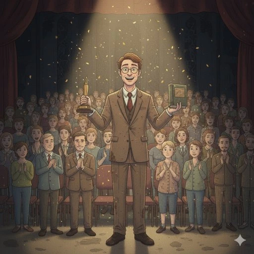

en esta aventura exploraras y decidiras el camino que tomará el señor howward, recuerda que tienes 4 finales distintos. disfrutala

conclusión
este sitio web está dedicado a la primera parte del trabajo práctico final, en este sitio has descubierto como se desarrolló la temática, su conexión con los finales alternativos y mostramos organización del código del draw, el mouseClicked, las diapositivas, los condicionales y los botónes que te permitieron sumergirte en la aventura hecha por dos estudiantes de diseño multimedial de la facultad de bellas artes. gracias por visitarnos